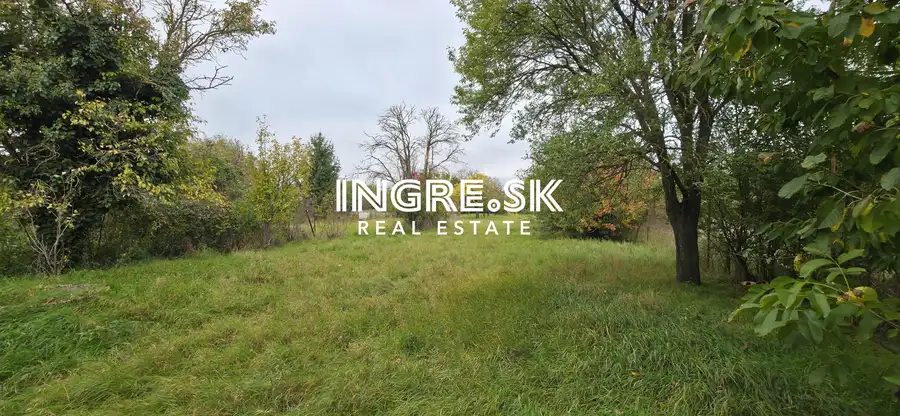
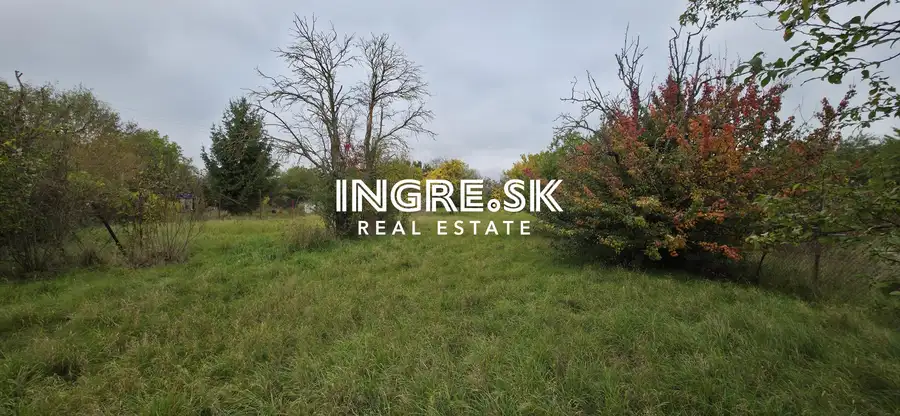
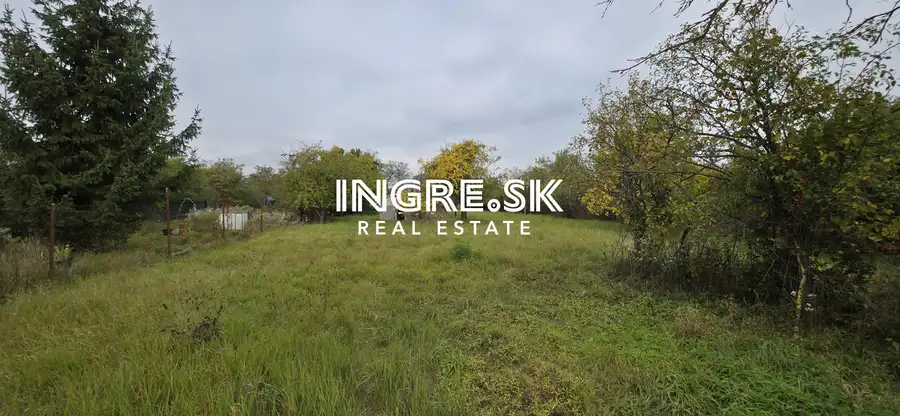
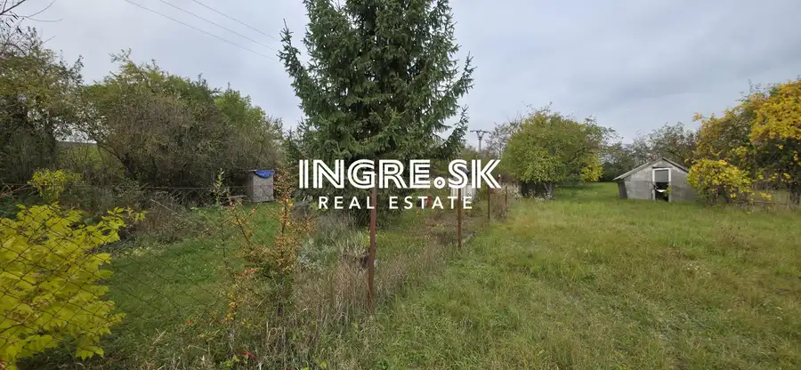
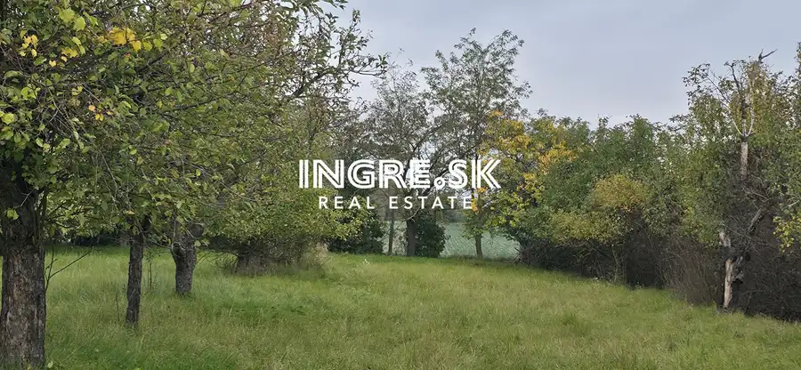
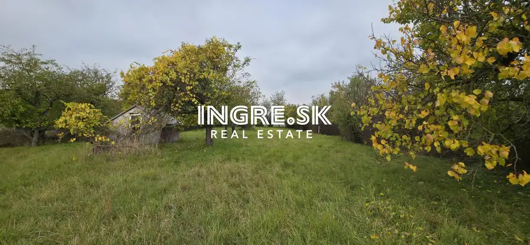
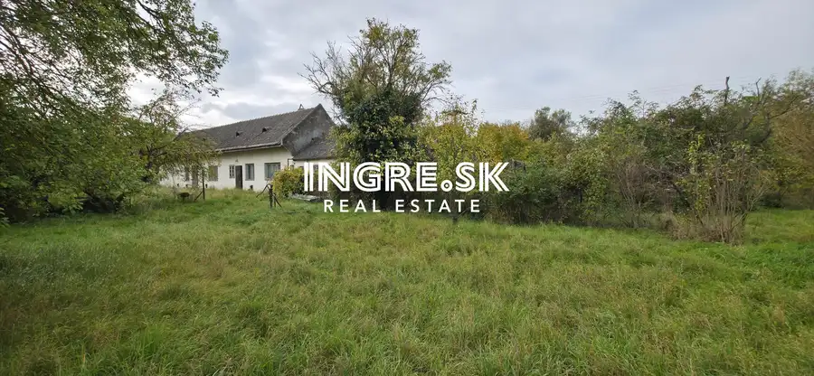
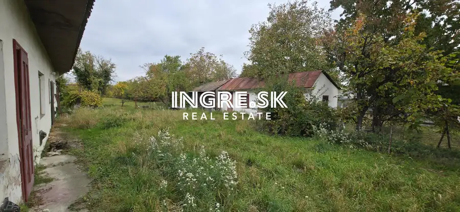

Stavebný pozemok - Most pri Bratislave
Most pri Bratislave









- Plocha2661 m²
- VlastníctvoOsobné
O nehnuteľnosti
Realitná kancelária INGRE.SK - Ponúkame na predaj pekný, veľký a slnečný pozemok výborná lokalita blízko Bratislavy obec Most pri Bratislave okres Senec.Pozemok je situovaný v zastavanom území v pôvodnej časti prakticky v centre obce na Budovateľskej ulici.Výmera pozemku je 2661 m2, má obdĺžnikový tvar so šírkou cca 21 m, dĺžka na východnej strane cca 127 m a dĺžka na západnej strane cca 115 m.Pozemok ma tri parcelné čísla, na prednej parcele je postavený rodinný dom v pôvodnom stave so súp. číslom, parcela má výmeru 819 m2 a je vedená ako Zastavaná plocha a nádvorie.Druhá parcela má 460 m2 vedená ako ZáhradaTretia parcela o výmere 1382 m2 vedená ako Záhrada.Na pozemku sa nachádza starý rodinný dom postavený okolo roku 1930 a hospodárska budova.Na pozemku sú vybudované prípojky IS, elektrina, plyn ( momentálne odpojené ) vodovodná prípojka obecný vodovod a studňa, kanalizačná prípojka je na ulici pred pozemkom s možnosťou pripojenia.Pozemok je oplotený s napojením na obecnú cestu, pravidelne udržiavaný v záhrade sa nachádzajú odrastené ovocné stromy.Výborná a tichá lokalita mimo hlavného ťahu cez obec, v pešej blízkosti zastávka autobusu a potraviny, v obci je ďalej lekáreň, súkromné zdravotné stredisko, veterinár, pošta, obecný úrad, v obci sa nachádza materská škôlka, škola I a II stupeň, a takisto reštaurácie, takisto aj nová vybudovaná lokalita s obchodmi Billa, Kraj a pod.Obec poskytuje rekreačné využitie, v blízkosti štrkoviská Zelená voda, Košariská, cykloturistika, Malý Dunaj.Dynamicky sa rozvíjajúca obec, s výborným, rýchlym napojením do mesta Bratislava po starej ceste alebo novou rýchlostnou cestou D4 a R7.K dispozícii je aj UPI obce ktorá povoľuje aj možnosť výstavby v zadných záhradných traktoch ako prízemné objekty bez obytného podkrovia s rovnou alebo nízko spádovou strechou typu bungalov.Výborná ponuka v centre obce.Viac info: Cena: 253 Eur / m2Tel: 0910 310 320Email: maduda@ingre.skMaklér: Martin Maduda
Parametre
- Druh
- Pozemok pre rodinné domy
- Dátum zverejnenia
- 13. 04. 2026
- Dĺžka pozemku
- 120
- Elektrina
- Na pozemku, Na pozemku - 400 V
- Odpadové vody
- Pri pozemku - Kanalizácia
- Plocha pozemku
- 2661 m²
- Plyn
- Na pozemku
- Terén pozemku
- Rovinatý
- Typ
- Predaj
- Vlastníctvo
- Osobné
- Voda
- Na pozemku - Diaľkový vodovod, Na pozemku - Studňa
- Územie
- Intravilán
- Šírka pozemku
- 21
Kde to je


Mohlo by Vás zaujímať
 Komerčné priestoryNové
45 000 €Predaj garáž v Ružinove na štrkovci Haburská ulica
Ružinov, Bratislava
13 m²
Komerčné priestoryNové
45 000 €Predaj garáž v Ružinove na štrkovci Haburská ulica
Ružinov, Bratislava
13 m²
 BytNové
95 000 €Na predaj zaujímavý priestor s pozemkom a parkovaním Bratislava Vrakuňa
Vrakuňa, Bratislava
1-izbový25 m²
BytNové
95 000 €Na predaj zaujímavý priestor s pozemkom a parkovaním Bratislava Vrakuňa
Vrakuňa, Bratislava
1-izbový25 m²
 BytNové
309 900 €Novostavba v Rovinke posledný 4 izbový byt s parkovaním a záhradou
Rovinka
4-izbový96 m²
BytNové
309 900 €Novostavba v Rovinke posledný 4 izbový byt s parkovaním a záhradou
Rovinka
4-izbový96 m²